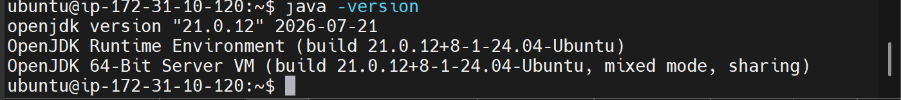
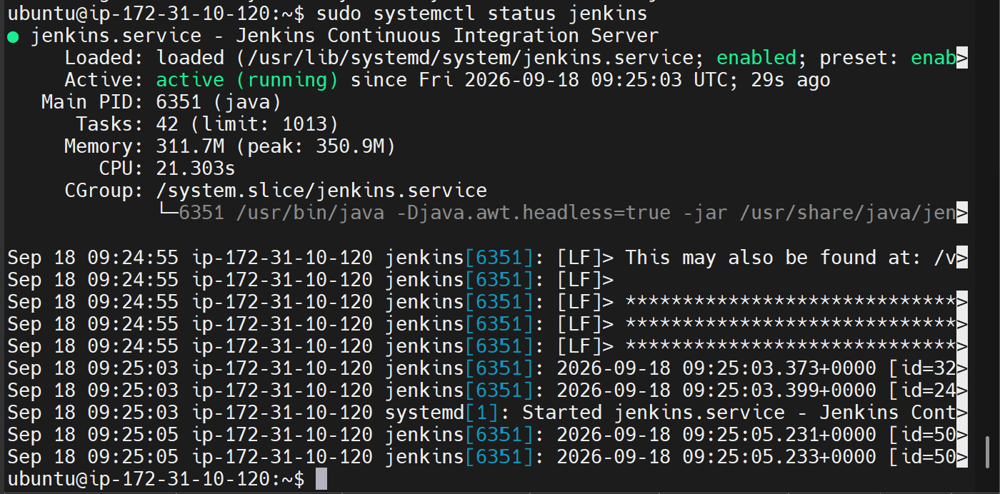
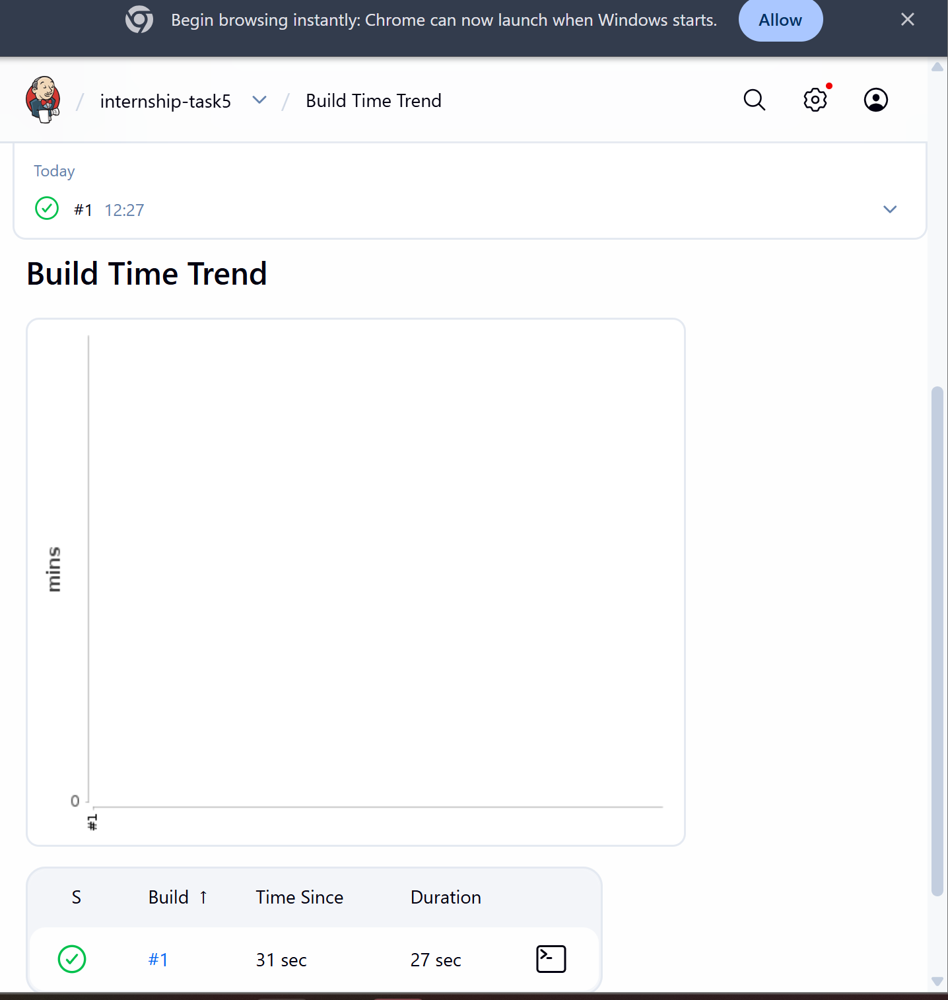
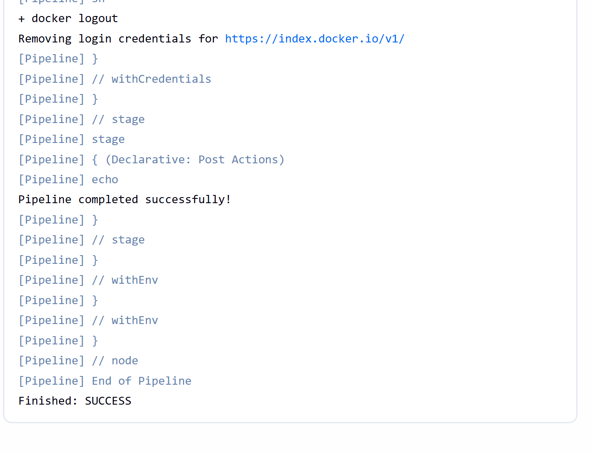
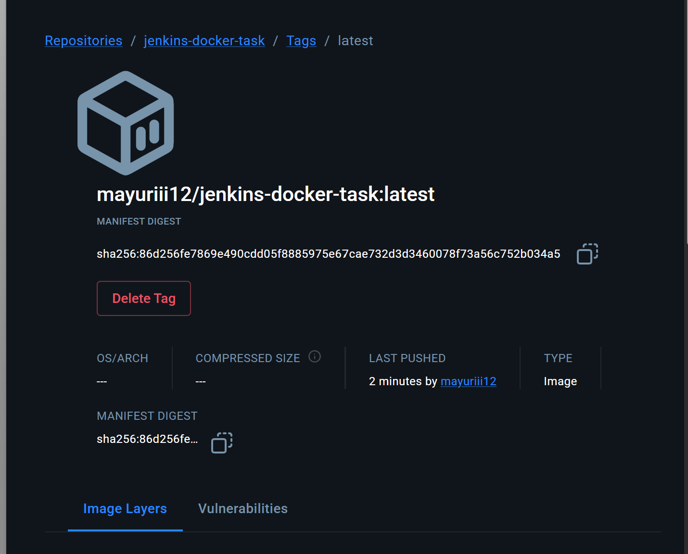

Create a Jenkins declarative pipeline that pulls code from GitHub, builds a Docker image and pushes it to Docker Hub.
AWS EC2, Jenkins, Git, Docker, GitHub and Docker Hub
GitHub
|
v
Jenkins
|
v
Build Docker Image
|
v
Push to Docker Hub
mayuriii12/jenkins-docker-task:BUILD_NUMBER
mayuriii12/jenkins-docker-task:latest
Login Succeeded
Pipeline completed successfully!
Finished: SUCCESS
The Jenkins pipeline successfully built the Docker image and pushed it to Docker Hub.
Some screenshots from the task execution are shown below.




